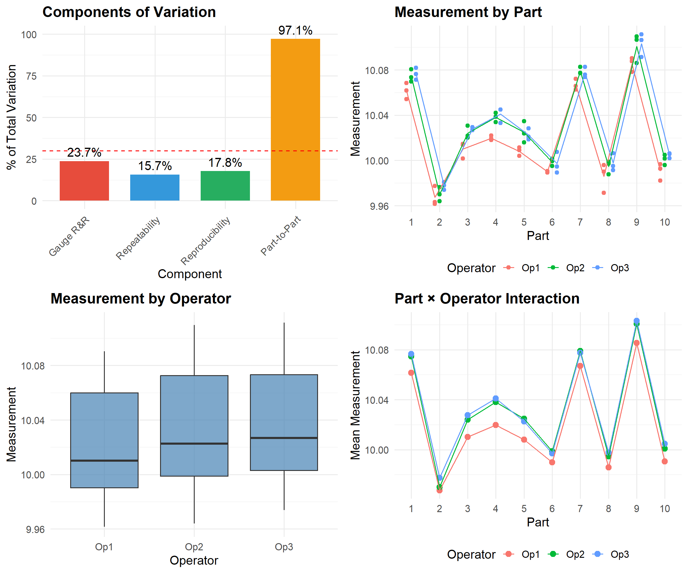
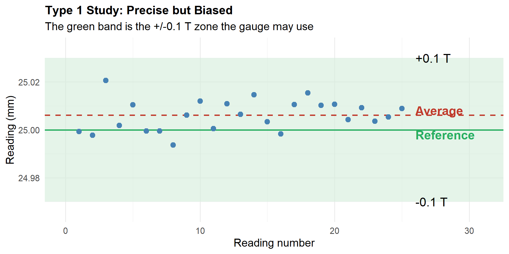
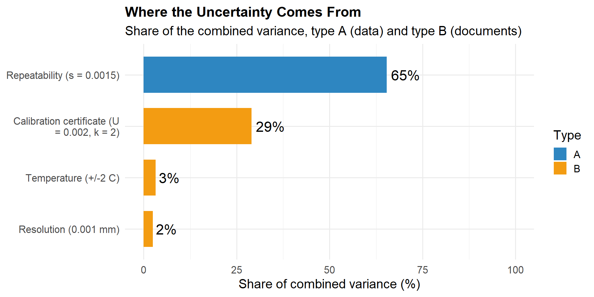
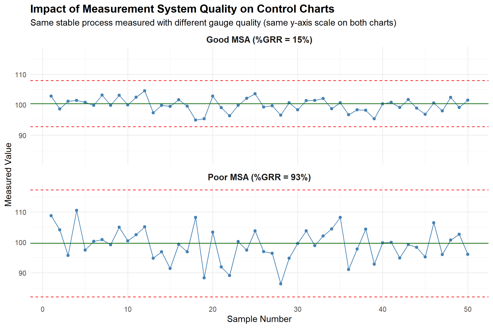

After completing this chapter, you will be able to:
Conduct a full crossed Gauge R&R study with the ANOVA method and extract the variance components, %GRR and ndc
Explain why ANOVA finds problems (operator-by-part interaction) that the Range method cannot
Run a Type 1 gauge study and judge a gauge with the capability indices \(C_g\) and \(C_{gk}\)
Choose between crossed, nested and Type 1 designs for a given measurement problem
Evaluate an attribute measurement system with kappa, effectiveness, miss rate and false-alarm rate
Build a measurement uncertainty budget and use it to compute the test uncertainty ratio and a guard-banded acceptance limit
Quantify how measurement error distorts control charts and capability indices
17.2 From Screening to a Full Study
In the introductory MSA chapter you measured the pieces of a measurement system (bias, linearity, stability, repeatability and reproducibility) and ran a Gauge R&R with the Range method. That method is quick, and it is the right tool for a first look at a gauge in the lab. It is not the tool a customer expects to see in a PPAP submission or a defence quality plan, and it breaks down in five situations:
Situation
Why the Range method is not enough
What this chapter uses
A customer or auditor wants the study “per AIAG MSA 4th edition”
The Range method is a screening tool and tends to overstate the Gauge R&R
ANOVA Gauge R&R
One operator seems to measure only certain parts differently
The Range method cannot see a part-by-operator interaction
ANOVA with the interaction term
A new gauge arrives and has not been used by anyone yet
There are no operators to compare, only the gauge
Type 1 study (\(C_g\), \(C_{gk}\))
The inspection is pass/fail, or the test destroys the part
There is no continuous reading to take a range of, or no second measurement of the same part
Attribute agreement, nested Gauge R&R
A calibration lab or defence contract wants a stated “plus or minus” on a reading
%GRR says nothing about the size of the error in the measurement units
Uncertainty budget
Industry connection: in automotive supply the ANOVA Gauge R&R and the attribute study are standard PPAP evidence, and the Type 1 study is the usual first check on a new gauge (VDA 5 and many OEM specific requirements). In defence and aerospace work the uncertainty budget is what the calibration certificate and the measurement procedure must state. In food processing the same ideas apply to checkweighers, metal detectors and seal-integrity checks.
17.3 Full Gauge R&R with ANOVA
17.3.1 ANOVA Method (Full Study)
ANOVA (Analysis of Variance) is a statistical technique that partitions the total observed variation in a dataset into distinct components, each attributable to a specific source. In the context of Gauge R&R, ANOVA separates the total measurement variation into contributions from:
Parts (the actual differences between items being measured)
Operators (systematic differences between people taking measurements)
Part × Operator interaction (whether certain operators measure certain parts differently)
Repeatability (random error when the same operator measures the same part multiple times)
17.3.1.1 Why Use ANOVA for Gauge R&R?
The fundamental question in any measurement system analysis is: “How much of the variation I observe comes from my measurement system versus the actual differences between parts?” ANOVA answers this question by statistically decomposing variance—it calculates how much each source contributes to what we observe.
Consider the alternative: if we simply looked at the spread of all measurements, we wouldn’t know whether a wide spread indicates highly variable parts (good—our gauge can detect differences) or a poor measurement system (bad—we’re adding noise). ANOVA untangles these effects mathematically.
17.3.1.2 Why ANOVA is the Preferred Method
While the Range Method provides a quick estimate, ANOVA offers several critical advantages for Gauge R&R studies:
Aspect
Range Method
ANOVA Method
Interaction effects
Cannot detect
Identifies Part × Operator interactions
Statistical rigor
Approximation using range-based estimates
Exact variance component estimation
Hypothesis testing
Not available
Provides F-tests and p-values for each source
Accuracy
Tends to overestimate GRR
More precise variance estimates
Information richness
Basic EV/AV breakdown
Full decomposition with confidence intervals
Industry acceptance
Screening only
Required for formal MSA studies (AIAG)
The ability to detect interaction effects is particularly important. If Operator A consistently measures Part 3 higher than Operator B does (but they agree on other parts), this indicates a training issue or technique difference that the Range Method would miss entirely. ANOVA flags this interaction, enabling targeted corrective action.
17.3.1.3 How ANOVA Works in Gauge R&R
ANOVA uses the F-statistic to test whether variation between groups (e.g., between operators) is significantly larger than variation within groups (repeatability). The mathematical basis is:
\[F = \frac{\text{Mean Square Between Groups}}{\text{Mean Square Within Groups}} = \frac{MS_{factor}}{MS_{error}}\]
A large F-value indicates that the factor (Part, Operator, or their interaction) contributes meaningfully to the observed variation. The p-value tells us the probability of seeing such an F-value if the factor had no real effect.
From the ANOVA table’s Mean Squares, we extract variance components (\(\sigma^2\)) for each source, then combine them to calculate the standard metrics: %EV (repeatability), %AV (reproducibility), %GRR, and the number of distinct categories (ndc).
# Full Gauge R&R using ANOVA method# 10 parts, 3 operators, 3 trialsset.seed(42)# Generate realistic GRR datan_parts <-10n_operators <-3n_trials <-3# Part true values (most of the variation)part_effects <-rnorm(n_parts, 0, 0.05)# Operator effects (some variation)operator_effects <-c(-0.008, 0.003, 0.005)# Create datasetgrr_data <-expand.grid(Part =1:n_parts,Operator =paste0("Op", 1:n_operators),Trial =1:n_trials)# Add measurementsgrr_data$Measurement <-10+ part_effects[grr_data$Part] + operator_effects[as.numeric(factor(grr_data$Operator))] +rnorm(nrow(grr_data), 0, 0.006) # Repeatability error# Convert to factorsgrr_data$Part <-factor(grr_data$Part)grr_data$Operator <-factor(grr_data$Operator)# Fit ANOVA modelanova_model <-aov(Measurement ~ Part + Operator + Part:Operator, data = grr_data)# Extract variance componentsanova_table <-anova(anova_model)print(anova_table)
Analysis of Variance Table
Response: Measurement
Df Sum Sq Mean Sq F value Pr(>F)
Part 9 0.136635 0.0151816 343.6163 < 2.2e-16 ***
Operator 2 0.003430 0.0017152 38.8223 1.52e-11 ***
Part:Operator 18 0.000430 0.0000239 0.5401 0.9263
Residuals 60 0.002651 0.0000442
---
Signif. codes: 0 '***' 0.001 '**' 0.01 '*' 0.05 '.' 0.1 ' ' 1
# Calculate %GRR using both methodstolerance <-0.30# Total tolerance# Method 1: % of Tolerance (%GRR_Tolerance)pct_GRR_tol <- (SV_GRR / tolerance) *100# Method 2: % of Total Variation (%GRR_TV)pct_GRR_tv <- (sigma_GRR / sigma_total) *100# Number of Distinct Categories (ndc)ndc <-1.41* (sigma_part / sigma_GRR)cat("=== Gauge R&R Acceptance Criteria ===\n\n")cat("%GRR (of Tolerance):", round(pct_GRR_tol, 1), "%\n")cat("%GRR (of Total Variation):", round(pct_GRR_tv, 1), "%\n")cat("Number of Distinct Categories (ndc):", round(ndc, 1), "\n\n")# Acceptance criteriacat("AIAG Acceptance Guidelines:\n")cat("─────────────────────────────────────\n")if(pct_GRR_tol <10) {cat("%GRR < 10%: ACCEPTABLE - Measurement system is acceptable\n")} elseif(pct_GRR_tol <30) {cat("%GRR 10-30%: MARGINAL - May be acceptable based on application\n")} else {cat("%GRR > 30%: UNACCEPTABLE - Measurement system needs improvement\n")}if(ndc >=5) {cat("ndc ≥ 5: ACCEPTABLE - Adequate discrimination\n")} elseif(ndc >=2) {cat("ndc 2-4: MARGINAL - Limited discrimination ability\n")} else {cat("ndc < 2: UNACCEPTABLE - Cannot distinguish between parts\n")}
=== Gauge R&R Acceptance Criteria ===
%GRR (of Tolerance): 17.2 %
%GRR (of Total Variation): 23.7 %
Number of Distinct Categories (ndc): 5.8
AIAG Acceptance Guidelines:
─────────────────────────────────────
%GRR 10-30%: MARGINAL - May be acceptable based on application
ndc ≥ 5: ACCEPTABLE - Adequate discrimination
17.3.3 Visual Analysis of Gauge R&R

17.4 Crossed, Nested and Destructive Studies
The ANOVA study above is a crossed design: every operator measures every part, several times. That only works when a part survives the measurement. Many of the tests that matter most do not leave a part to re-measure:
a tensile test pulls the coupon apart,
a weld peel or burst test destroys the joint,
a food-safety plate count uses up the sample,
a hardness indent on a thin section cannot be repeated on the same spot.
In these cases the study has to assume that parts from the same batch are close enough to be treated as “the same part”. The batch is then nested inside the operator: each operator tests their own set of samples from a homogeneous batch, and nothing is shared across operators.
The analysis is the same ANOVA idea with a different model: the variation within a batch is repeatability, the variation between operator averages is reproducibility, and anything that is left over from batch-to-batch differences is mixed into the repeatability. That is why a nested study usually overstates the measurement error, and why the batch should be as uniform as you can make it.
Discussion: your team must qualify a destructive peel test on a sealed food pouch. What would you do to make the nested study fair?
Good practice:
Take all samples from one production run and from consecutive pouches, so the seal quality is as similar as possible.
Give each operator a randomised set of pouches, not the first ten off the line.
Use the same test fixture, peel speed and conditioning time for every operator.
Compare the result with the process: if the pouches in one run already differ by about as much as the measurement error, the study cannot separate the two. Say so in the report instead of quoting a number that looks more precise than it is.
17.5 Type 1 Gauge Study: \(C_g\) and \(C_{gk}\)
A Gauge R&R needs operators, parts and a lot of time. Before any of that, a quicker question is worth asking: is the gauge itself good enough for this tolerance? The Type 1 study answers it with one master part (a gauge block or a certified setting master) and one gauge. The gauge measures the master about 25 to 50 times, by the same operator under the same conditions, and the readings are compared with the master’s known value.
Two indices come out of it, built the same way as the process capability indices you met in SPC:
where \(T\) is the tolerance width (USL \(-\) LSL), \(s_g\) is the standard deviation of the repeated readings, \(\bar{x}\) is their average and \(x_{ref}\) is the master’s reference value. The gauge is accepted when both are at least 1.33.
Read the formulas the way you read \(C_p\) and \(C_{pk}\):
\(C_g\) asks only about spread. The gauge is allowed to use 20% of the tolerance (\(0.2\,T\)) for its own \(6\,s_g\) scatter.
\(C_{gk}\) asks about spread and bias together. The average has to sit close enough to the reference that \(3\,s_g\) still fits inside \(\pm 0.1\,T\).
A big gap between \(C_g\) and \(C_{gk}\) means the gauge is precise but biased. That is cured by adjusting or recalibrating the gauge, not by buying a better one.
# Type 1 study: 25 readings of a 25.000 mm master, part tolerance 0.30 mm (+/-0.15)set.seed(1717)x_ref <-25.000tolerance <-0.30readings <-rnorm(25, mean =25.008, sd =0.006)x_bar <-mean(readings)s_g <-sd(readings)bias <- x_bar - x_refCg <-0.2* tolerance / (6* s_g)Cgk <- (0.1* tolerance -abs(bias)) / (3* s_g)cat("=== Type 1 Gauge Study ===\n\n")cat(sprintf("Average reading: %.4f mm\n", x_bar))cat(sprintf("Bias: %.4f mm\n", bias))cat(sprintf("Repeatability (s_g): %.4f mm\n\n", s_g))cat(sprintf("Cg = %.2f (spread only)\n", Cg))cat(sprintf("Cgk = %.2f (spread and bias)\n\n", Cgk))cat(ifelse(Cgk >=1.33, "Gauge is capable for this tolerance\n","Gauge is NOT capable: Cgk is below 1.33\n"))type1 <-data.frame(n =1:25, reading = readings)ggplot(type1, aes(x = n, y = reading)) +annotate("rect", xmin =-Inf, xmax =Inf, ymin = x_ref -0.1* tolerance,ymax = x_ref +0.1* tolerance, fill ="#D4EDDA", alpha =0.6) +geom_hline(yintercept = x_ref, color ="#27AE60", linewidth =1) +geom_hline(yintercept = x_bar, color ="#C0392B", linewidth =1, linetype ="dashed") +geom_point(color ="steelblue", size =3) +annotate("text", x =26, y = x_ref -0.1* tolerance, label ="-0.1 T", hjust =0,size =4* diagram_text_scale) +annotate("text", x =26, y = x_ref +0.1* tolerance, label ="+0.1 T", hjust =0,size =4* diagram_text_scale) +annotate("text", x =26, y = x_ref -0.002, label ="Reference", hjust =0,color ="#27AE60", fontface ="bold", size =4* diagram_text_scale) +annotate("text", x =26, y = x_bar +0.002, label ="Average", hjust =0,color ="#C0392B", fontface ="bold", size =4* diagram_text_scale) +scale_x_continuous(limits =c(0, 31)) +coord_cartesian(ylim = x_ref +c(-0.035, 0.035)) +labs(title ="Type 1 Study: Precise but Biased",subtitle ="The green band is the +/-0.1 T zone the gauge may use",x ="Reading number", y ="Reading (mm)") +theme_minimal() +theme(plot.title =element_text(face ="bold", size =12* chart_text_scale))

Type 1 study: 25 readings of a 25.000 mm master against the +/-0.1T band
=== Type 1 Gauge Study ===
Average reading: 25.0061 mm
Bias: 0.0061 mm
Repeatability (s_g): 0.0065 mm
Cg = 1.54 (spread only)
Cgk = 1.23 (spread and bias)
Gauge is NOT capable: Cgk is below 1.33
The scatter is small, so \(C_g\) is comfortable, but the whole cloud sits above the reference and \(C_{gk}\) falls below 1.33. This is a gauge that needs adjusting, not replacing.
Your turn : the gauge below is both biased and noisy. Change the average and the spread of the readings and watch which index moves.
Type 1 Gauge Study
Class task
mm
mm
mm
Challenge: Make the gauge capable (both Cg and Cgk at least 1.33) without touching the 0.30 mm tolerance. Which input do you have to change, and by how much?
Show the live R code behind this calculator
The card above re-runs this exact webR code every time you change an input, substituting your values for the variables at the top. Edit the code directly and press Run Code to experiment further.
Notice that moving the average back onto the reference raises \(C_{gk}\) only up to the value of \(C_g\) (with zero bias the two are equal). To go beyond that, the spread has to come down.
17.5.1 Try it yourself: a Type 1 study on a new gauge
A bore gauge is checked against a 10.000 mm ring master before it goes on the line. The part tolerance is 0.20 mm. Twenty readings gave an average of 10.006 mm and a standard deviation of 0.004 mm.
Both indices are not both above 1.33, so the gauge is not yet capable for this tolerance. The gap between \(C_g\) and \(C_{gk}\) comes from the 0.006 mm bias, so the first corrective action is to re-zero the gauge on the master.
17.6 Attribute Measurement Systems
For pass/fail or categorical measurements (visual inspection, go/no-go gauges), we use Attribute MSA or Attribute Agreement Analysis.
17.6.1 Kappa Statistic
When evaluating attribute measurement systems (pass/fail, accept/reject, visual inspection), you might think that percent agreement would be sufficient—if two inspectors agree 90% of the time, isn’t that good enough? The problem is that some agreement happens purely by chance, and percent agreement doesn’t account for this.
17.6.1.1 Why Percent Agreement Can Be Misleading
Consider a visual inspection where 95% of parts are good. If an inspector simply guesses “Accept” for every part (without even looking), they would be “correct” 95% of the time. Two such inspectors would agree 90.5% of the time by pure chance:
\[P_e = P(\text{both say Accept}) + P(\text{both say Reject}) = 0.95^2 + 0.05^2 = 0.905\]
This is why we need Cohen’s Kappa (\(\kappa\))—it measures agreement beyond what we’d expect from chance alone.
17.6.1.2 The Kappa Formula
\[\kappa = \frac{P_o - P_e}{1 - P_e}\]
Where:
\(P_o\) = Observed proportion of agreement (how often they actually agree)
\(P_e\) = Expected proportion of agreement by chance (how often they’d agree if guessing randomly based on their individual tendencies)
\(1 - P_e\) = Maximum possible agreement beyond chance
Interpreting the formula: The numerator (\(P_o - P_e\)) represents actual agreement minus chance agreement—the “real” agreement attributable to consistent measurement. The denominator (\(1 - P_e\)) normalizes this to a 0–1 scale by dividing by the maximum possible improvement over chance.
Kappa Value
Meaning
\(\kappa = 1\)
Perfect agreement (everyone agrees, and not by chance)
\(\kappa = 0\)
Agreement equals chance—no better than random guessing
\(\kappa < 0\)
Agreement is worse than chance (systematic disagreement)
17.6.1.3 When to Use Kappa
Use Kappa when evaluating:
Inspector vs. Reference: Does the operator match the known correct answer? (Most important for MSA)
Inspector vs. Inspector: Do two operators classify the same parts the same way?
Inspector vs. Self (Repeatability): Does the same operator give the same answer when re-inspecting the same part?
For a robust attribute MSA, you should calculate Kappa for all three comparisons. High agreement with other operators but low agreement with the reference standard indicates consistent but incorrect inspection—a training problem.
17.6.4 Effectiveness, Miss Rate and False-Alarm Rate
Kappa tells you whether inspectors agree beyond chance. A customer usually asks two plainer questions: how often does a bad part get through? and how often is a good part thrown away? The AIAG attribute study answers them with three rates, all counted against the reference decision of each part:
\[\text{Effectiveness} = \frac{\text{correct decisions}}{\text{total opportunities}} \qquad \text{Miss rate} = \frac{\text{bad parts accepted}}{\text{opportunities on bad parts}} \qquad \text{False-alarm rate} = \frac{\text{good parts rejected}}{\text{opportunities on good parts}}\]
An “opportunity” is one part judged once by one appraiser, so 20 bad parts judged by 3 appraisers in 3 trials is 180 opportunities on bad parts.
Result
Effectiveness
Miss rate
False-alarm rate
Acceptable
90% or more
2% or less
5% or less
Marginal
80% to 90%
2% to 5%
5% to 10%
Unacceptable
below 80%
above 5%
above 10%
The two error rates carry very different costs. A miss ships a defect to the customer: in an airbag inflator weld or a food metal-detector check it is the failure that matters. A false alarm costs scrap, rework and re-inspection. A system can have a good overall effectiveness and still be unacceptable because of its miss rate, which is why all three are reported.
Your turn : the vision system below checks a seal on a food pouch. Change the counts and watch the three rates.
Attribute Study: Effectiveness, Miss and False Alarm
Class task
Challenge: Reach the 'Acceptable' band on both error rates (miss rate 2% or less, false-alarm rate 5% or less) with the study size held at 60 bad and 120 good opportunities.
Show the live R code behind this calculator
The card above re-runs this exact webR code every time you change an input, substituting your values for the variables at the top. Edit the code directly and press Run Code to experiment further.
With 60 opportunities on bad parts, one missed defect is already 1.7%, and two is 3.3%. A study this small cannot show a miss rate below 2% with any margin, which is why customers ask for larger samples when the consequence of a miss is severe.
17.6.5 Attribute MSA Best Practices
Best Practices for Attribute MSA Studies
Practice
Description
Use boundary samples
Include samples at the accept/reject boundary where decisions are hardest
Include clear accept/reject
Include obvious accept and obvious reject samples as controls
Blind testing
Operators should not know which samples are repeated or reference
Multiple trials
Minimum 2-3 trials per operator to assess within-operator repeatability
Reference standard
Must have known correct answers to assess accuracy, not just agreement
Adequate sample size
Minimum 30-50 samples recommended for statistical validity
17.7 Measurement Uncertainty
%GRR compares the measurement error with the tolerance or the process. It never says how big the error is in millimetres. When a calibration lab certifies a gauge block, or a defence contract states that a dimension must be verified to a given uncertainty, the answer is an uncertainty budget built the way the Guide to the Expression of Uncertainty in Measurement (GUM) describes.
17.7.1 Building a Budget
Every source of error becomes a standard uncertainty, a one-standard-deviation value in the unit of the measurement. How you get it depends on what you know about the source:
Source
Type
What you know
Standard uncertainty \(u\)
Repeatability
A (from data)
Standard deviation \(s\) of repeated readings
\(u = s\) (or \(s/\sqrt{n}\) for the average of \(n\) readings)
Calibration certificate
B (from a document)
Expanded uncertainty \(U\) at coverage factor \(k\)
\(u = U / k\) (usually \(k = 2\))
Resolution
B
Reading is rounded to a step \(d\); any value in \(\pm d/2\) is equally likely
\(u = d / (2\sqrt{3})\)
Temperature
B
Part and gauge may be off 20 °C by \(\pm\Delta T\); expansion coefficient \(\alpha\)
\(u = \alpha \, L \, \Delta T / \sqrt{3}\)
The standard uncertainties are independent, so they add as variances (root-sum-of-squares), exactly like the standard deviations in the Gauge R&R:
\[u_c = \sqrt{u_1^2 + u_2^2 + \dots + u_n^2} \qquad\qquad U = k \cdot u_c \quad (k = 2 \text{ for about } 95\% \text{ coverage})\]
Two checks follow from the budget:
Test uncertainty ratio (TUR)\(= T / (2U)\), the tolerance width divided by the width of the uncertainty band. The common rule is 4:1 or better.
Guard banding. If the uncertainty is not negligible, a reading just inside the specification limit may belong to a part that is actually outside. Tightening the acceptance limits by \(U\) (acceptance zone \(= LSL + U\) to \(USL - U\)) makes the chance of accepting a bad part small, at the price of rejecting some good ones.
# Uncertainty budget: 0-25 mm micrometer measuring a 25 mm shaft, tolerance 0.10 mm (+/-0.05)tolerance <-0.10alpha <-11.5e-6# steel, per degree Clength_mm <-25delta_T <-2# +/- degrees C from 20 Cbudget <-data.frame(Source =c("Resolution (0.001 mm)", "Calibration certificate (U = 0.002, k = 2)","Repeatability (s = 0.0015)", "Temperature (+/-2 C)"),Type =c("B", "B", "A", "B"),u =c(0.001/ (2*sqrt(3)),0.002/2,0.0015, alpha * length_mm * delta_T /sqrt(3)))budget$Share <- budget$u^2/sum(budget$u^2) *100u_c <-sqrt(sum(budget$u^2))U <-2* u_cTUR <- tolerance / (2* U)cat("=== Uncertainty Budget ===\n\n")print(transform(budget, u =round(u, 5), Share =round(Share, 1)), row.names =FALSE)cat(sprintf("\nCombined standard uncertainty u_c = %.5f mm\n", u_c))cat(sprintf("Expanded uncertainty U (k = 2) = %.5f mm\n", U))cat(sprintf("Test uncertainty ratio T / 2U = %.1f : 1\n", TUR))cat(sprintf("Acceptance zone (guard banded) = %.3f to %.3f mm from nominal\n", -tolerance /2+ U, tolerance /2- U))budget$Source <-factor(budget$Source, levels = budget$Source[order(budget$Share)])ggplot(budget, aes(x = Source, y = Share, fill = Type)) +geom_col(width =0.7) +geom_text(aes(label =paste0(round(Share), "%")), hjust =-0.15, size =4* diagram_text_scale) +coord_flip(ylim =c(0, 100)) +scale_x_discrete(labels = scales::label_wrap(28)) +scale_fill_manual(values =c(A ="#2E86C1", B ="#F39C12")) +labs(title ="Where the Uncertainty Comes From",subtitle ="Share of the combined variance, type A (data) and type B (documents)",x =NULL, y ="Share of combined variance (%)", fill ="Type") +theme_minimal() +theme(plot.title =element_text(face ="bold", size =12* chart_text_scale))

Contribution of each source to the combined uncertainty of a micrometer measurement
=== Uncertainty Budget ===
Source Type u Share
Resolution (0.001 mm) B 0.00029 2.4
Calibration certificate (U = 0.002, k = 2) B 0.00100 29.0
Repeatability (s = 0.0015) A 0.00150 65.3
Temperature (+/-2 C) B 0.00033 3.2
Combined standard uncertainty u_c = 0.00186 mm
Expanded uncertainty U (k = 2) = 0.00371 mm
Test uncertainty ratio T / 2U = 13.5 : 1
Acceptance zone (guard banded) = -0.046 to 0.046 mm from nominal
Because the contributions add as squares, the largest one dominates: here the calibration certificate and the repeatability account for almost all of the variance, and a gauge with finer resolution would barely change the answer. A budget tells you which source to attack before you spend money.
Your turn : the budget below is for a digital caliper checking a 25 mm feature with a total tolerance of 0.20 mm.
Uncertainty Budget and TUR
Class task
mm
mm
mm
C
Challenge: Reach a test uncertainty ratio of 4:1 or better without relaxing the 0.20 mm tolerance. Which source do you attack first?
Show the live R code behind this calculator
The card above re-runs this exact webR code every time you change an input, substituting your values for the variables at the top. Edit the code directly and press Run Code to experiment further.
17.7.2 Try it yourself: an uncertainty budget by hand
A 0.01 mm caliper checks a feature with a total tolerance of 0.30 mm. Its calibration certificate gives U = 0.02 mm at k = 2, and the repeatability standard deviation from a short study is 0.012 mm. Ignore temperature.
Show the worked solution
Resolution: \(u = 0.01 / (2\sqrt{3}) =\)0.0029 mm
Calibration: \(u = 0.02 / 2 =\)0.0100 mm
Combined: \(u_c = \sqrt{0.0029^2 + 0.0100^2 + 0.012^2} =\)0.0159 mm
Expanded: \(U = 2 \times 0.0159 =\)0.0318 mm
\(TUR = 0.30 / (2 \times 0.0318) =\)4.72 : 1
The ratio is above 4:1, so the caliper is acceptable for this tolerance. The repeatability (57% of the combined variance) is the source to attack first.
17.8 MSA and SPC Relationship
Poor measurement systems directly impact SPC effectiveness.
17.8.1 Effect on Control Charts

17.8.2 Effect on Capability Studies
Teaching demo — drag the gauge quality and the process sigma, and watch the observed Cpk fall as the measurement error grows.
MSA Impact on Capability Calculator
Teaching demo
Show the live R code behind this calculator
17.9 Choosing the Right Study
By now there are five tools in the box. Each answers a different question, and picking the wrong one produces a number that looks official but means nothing.
Question
Study
Is this new gauge good enough for the tolerance before anyone uses it?
Type 1 (\(C_g\), \(C_{gk}\))
How much of the variation comes from the gauge and the people using it?
Crossed Gauge R&R (ANOVA)
The test destroys the part. How do we qualify it?
Nested Gauge R&R
Do inspectors agree with each other and with the reference on pass/fail calls?
Attribute agreement (kappa, effectiveness, miss rate)
How large is the measurement error in the unit of measurement?
Uncertainty budget
17.9.1 Try it yourself: which study fits?
17.10 Summary
Range method is a screen, ANOVA is the study. ANOVA gives exact variance components, tests for part-by-operator interaction and is what customers expect.
Type 1 first.\(C_g\) and \(C_{gk}\) qualify a gauge alone; accept at 1.33 or better, and read a large gap between them as bias.
Pick the design to fit the part. Crossed when parts survive, nested when they do not, Type 1 when there are no operators yet.
Attribute systems have three rates, not one. Report effectiveness, miss rate and false-alarm rate against the reference, and weight the miss rate when escapes are costly.
An uncertainty budget adds variances. The largest source dominates, so rank them before spending money; check the TUR (4:1 or better) and guard-band when it is not.
Measurement error distorts SPC. It widens the control limits and lowers the apparent capability, so fix the gauge before you chase the process.
“A number without an uncertainty is only an opinion.”
17.11 Review Questions
Question 1: A visual inspection has the following results: Kappa vs. reference = 0.72, within-operator agreement = 88%, between-operator agreement = 75%. Evaluate this attribute measurement system.
Answer:
Results Interpretation:
Kappa vs. Reference = 0.72
Falls in “Substantial agreement” range (0.61-0.80)
Operators are correctly classifying parts most of the time
Acceptable for many applications, but improvement possible
Within-Operator Agreement = 88%
Operators are fairly consistent with themselves
12% of the time, same operator gives different result on same part
Should target >90% for critical inspections
Between-Operator Agreement = 75%
Operators disagree on 25% of parts
This is a significant reproducibility issue
Major source of inconsistency in product quality
Assessment: MARGINAL - Improvement Needed
Recommended Actions:
Standardize criteria: Create clear visual standards with boundary samples
Photos of accept/reject borderline cases
Written descriptions of defect criteria
Training:
Calibration session with all operators and reference samples
Identify operators with lower agreement for targeted training
Improve conditions:
Check lighting adequacy and consistency
Ensure proper viewing distance and angle
Reduce fatigue with appropriate break schedules
Consider automation: For critical inspections, automated vision systems may provide better consistency
Re-study after improvements to verify effectiveness
Question 2: Given the following ANOVA table from a Gauge R&R study, calculate the variance components and %GRR.
%GRR (of total variation): 31.9%
Assessment UNACCEPTABLE (> 30%)
Number of distinct categories (ndc) 4.2
Var(Repeatability) 0.000300
Var(Interaction) 0.000067
Var(Operator) 0.000025
Var(Part) 0.003463
Var(Reproducibility) 0.000092
Var(GRR) 0.000392
Var(Total) 0.003855
Question 3: A Type 1 study gives \(C_g\) = 2.10 and \(C_{gk}\) = 0.95. What is wrong with the gauge, and what do you do?
Answer:
\(C_g\) is well above 1.33, so the spread of the gauge is small enough for the tolerance. \(C_{gk}\) is below 1.33, and since \(C_{gk}\) differs from \(C_g\) only through the bias term, the gauge is precise but biased: its average sits too far from the master.
Action: re-zero or recalibrate the gauge (or apply a documented correction), then repeat the Type 1 study. There is no need to replace the gauge.
Question 4: Why can a nested Gauge R&R overstate the measurement error compared with a crossed study?
Answer:
In a nested study each operator tests different samples, so any difference between batches or samples lands inside the apparent repeatability and reproducibility. A crossed study measures the same part several times, so the part-to-part difference is removed and only the measurement system remains.
To keep the overstatement small, take the samples from a single homogeneous batch (consecutive items from one run), randomise the allocation to operators, and say in the report that the result is an upper bound on the measurement error.
Question 5: Compare the two ways a gauge can fail a tolerance check: a bad \(C_g\) and a bad TUR. What does each tell you?
Answer:
\(C_g\) and \(C_{gk}\) come from repeated readings of a master and describe the gauge’s scatter and bias against the tolerance. The TUR comes from an uncertainty budget and also includes the sources that repeated readings of one master do not reveal: the calibration certificate, the resolution rounding and the temperature. A gauge can pass a Type 1 study and still have a poor TUR because its calibration uncertainty is large. Qualify with both when the specification allows little room.
17.12 References
AIAG. (2010). Measurement Systems Analysis Reference Manual (4th ed.). Automotive Industry Action Group.
Burdick, R.K., Borror, C.M., & Montgomery, D.C. (2005). Design and Analysis of Gauge R&R Studies. SIAM.
JCGM 100:2008. Evaluation of Measurement Data - Guide to the Expression of Uncertainty in Measurement (GUM).
VDA. (2021). VDA 5: Capability of Measurement Processes (3rd ed.). Verband der Automobilindustrie.
ISO 22514-7:2021. Statistical Methods in Process Management - Capability and Performance - Part 7: Capability of Measurement Processes.
Dietrich, E., & Schulze, A. (2011). Statistical Procedures for Machine and Process Qualification (6th ed.). Hanser.
Montgomery, D.C. (2019). Introduction to Statistical Quality Control (8th ed.). Wiley.
ASTM E2782-17. Standard Guide for Measurement Systems Analysis.